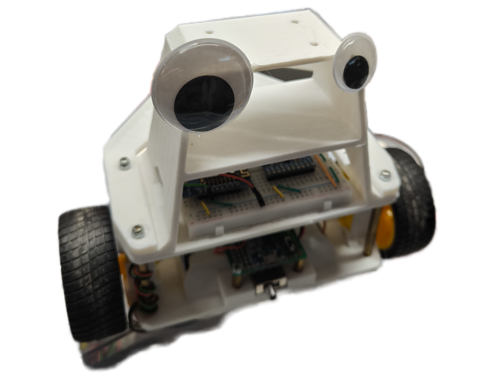
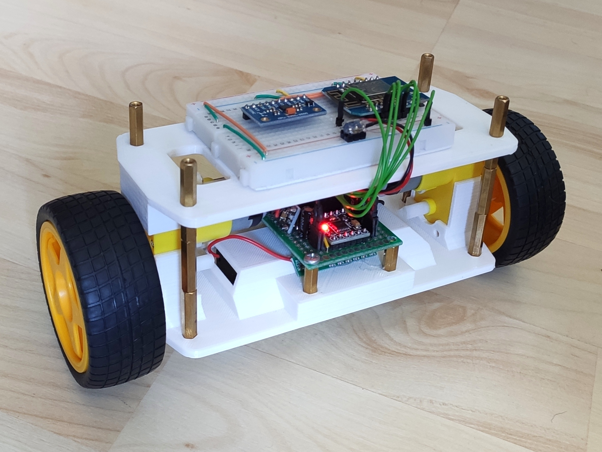
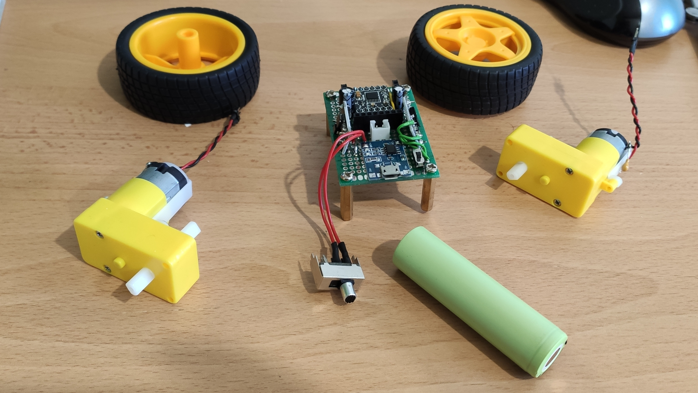
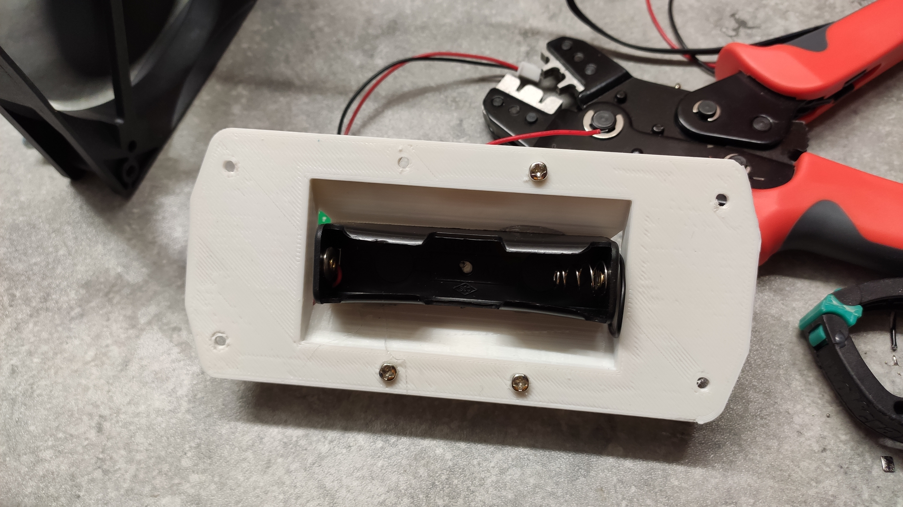
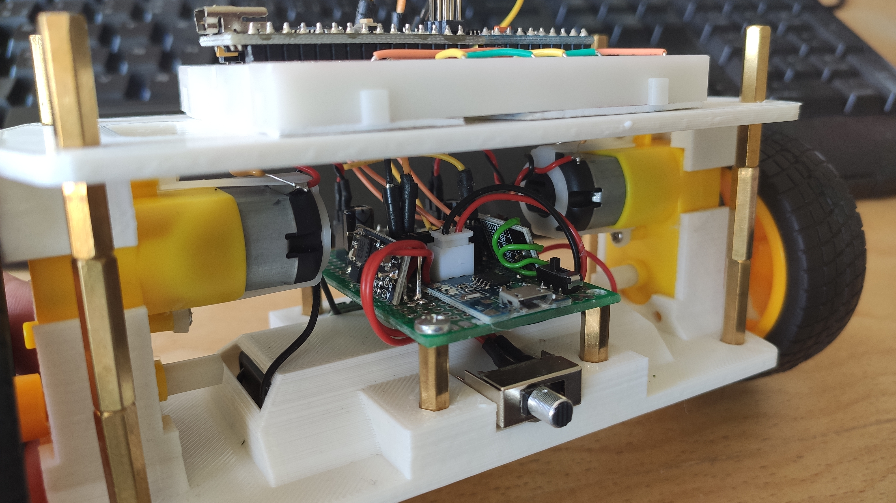
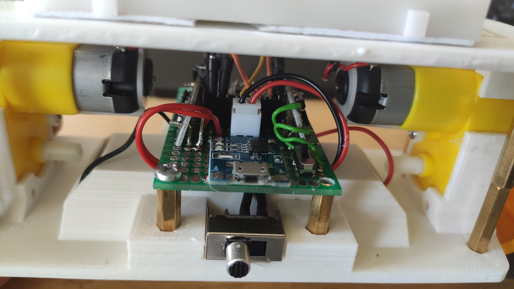

Mini Kenterprise Special Edition
Kevin
Kevin is a two-wheel robotic car built around the Mini Kenterprise control platform. This is a fixed reference build, made for builders who want to reproduce this particular project rather than configure a boat.

Reference bill of materials
This list documents the reference build only. It intentionally has no purchasing links, as I won't be able to keep them up to date. Refer to the original Kenterprise components for sourcing. You will have to search for the special parts yourself in your online store of choice.
| Part | Qty. | Reference notes |
|---|---|---|
| TT gear motor | 2 | One motor drives each wheel. |
| Compatible wheel | 2 | Used with the TT gear motors. |
| Wemos D1 Mini | 1 | Microcontroller for the control platform. |
| DRV8833 dual H-bridge driver | 1 | Drives the two motors. |
| 18650 Li-Ion cell | 1 | Power source for the reference build. |
| TP4056 charging module | 1 | Used for charging the 18650 cell, charger only. |
| 1S 15A Li-Ion BMS board | 1 | Used to protect the battery. |
| Prototype board and pin headers | 1 | For the controller and power wiring. |
| Toggle switch | 1 | Main power switch. |
| Hookup wire, heat-shrink tubing, M3 hardware, and standoffs | As needed | Choose lengths to suit the printed chassis and your wiring. |
3D-printable parts
The chassis is made from the four files below. Download links point directly to the project repository.
Reference build





